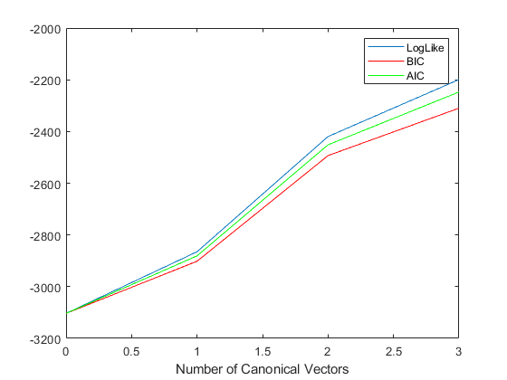

clear all close all % This script demonstrates Canonical Variates Analysis (CVA) and how to % select the optimal number of shared components to best capture the % correlations structure between the two datasets % Set dimensions of both datasets d1=3; d2=5; N=100; disp('Model order selection'); % Sex max number of canonical vectors to test %m=min([d1,d2]) m=3; % Generate true factor loading matrices W1=10*randn(d1,m); W2=10*randn(d2,m); % Observation noise SD sig=1; % Observation noise covariance E1=sig*randn(d1,N); E2=sig*randn(d2,N); % Generate latent variables if m==0 X1=E1; X2=E2; else % Generate latent source signals Z=randn(m,N); % Generate observed data (linear combination of latent variables + noise) X1=W1*Z+E1; X2=W2*Z+E2; end % Arrays to store model evidence and criteria for i=1:4, % Probabilistic CVA with i-1 canonical vectors CVA = spm_cva_prob (X1,X2,i-1); L(i)=CVA.L; % Log-likelihood bic(i)=CVA.bic; % Bayesian Information Criterion aic(i)=CVA.aic; % Akaike Information Criterion end % Plot model evidence and information criteria vs number of canonical vectors figure plot([0:3],L); hold on plot([0:3],bic,'r'); plot([0:3],aic,'g'); xlabel('Number of Canonical Vectors'); legend('LogLike','BIC','AIC');
Model order selection